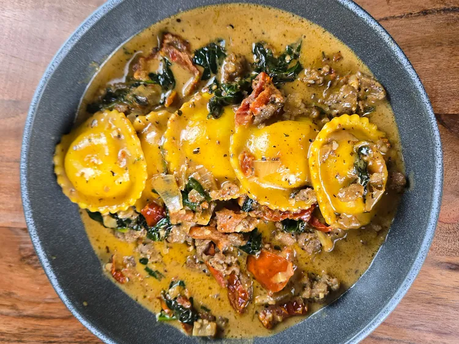

Creamy Tuscan Ravioli

Description
This creamy Tuscan ravioli has both fire roasted and sun-dried tomatoes in a creamy cheese sauce with Italian sausage. Delicate 4-cheese ravioli is added in the last few minutes of cooking time.
Prep Time
20 mins
Cook Time
15 mins
Total Time
35 mins
Servings
4 to 6
Ingredients
- 1 pound frozen 4-cheese ravioli
- 1/2 pound Italian sausage
- 1 tablespoon olive oil, divided
- 1/2 yellow onion, chopped
- 3 cloves garlic, chopped
- 1 tablespoon Italian seasoning, divided
- 1/2 (14.5 pounce) can fire roasted tomatoes
- 1/2 cup oil packed sun-dried tomatoes
- 1/2 cup chicken broth, or more as needed
- 1 cup heavy cream
- 1/2 cup freshly grated Parmesan cheese
- 2 cups fresh spinach
Steps
- Place ravioli on the counter to thaw completely, about 30 minutes.
- Heat a heavy skillet or Dutch oven over medium heat. Add Italian sausage and cook until no longer pink, 5 to 10 minutes. Remove sausage from skillet and set aside.
- Add up to 1/2 tablespoon olive oil to the same skillet if needed, and scrape up the brown bits. Add onions, garlic, and 1/2 tablespoon Italian seasoning. Stir and cook for 1 to 2 minutes.
- Add fire roasted tomatoes and sun-dried tomatoes and stir. Cook 2 to 3 minutes.
- Stir in chicken broth and heavy cream. Add parmesan cheese and stir well. Allow to simmer and thicken for 2 to 3 minutes. If the sauce is too thick, add a little more chicken broth.
- Add Italian sausage and spinach; combine well. Add ravioli. Use a spoon to cover each ravioli with cream sauce. Turn heat to low, cover, and allow to simmer for 3 to 5 minutes.